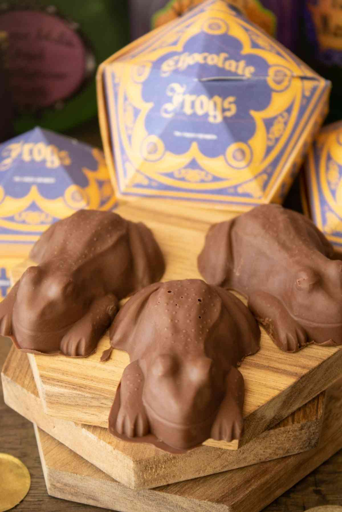

Chocolate Frog Recipe

How to make Chocolate Frogs
Watching Harry get his first chocolate frog on the Hogwarts Express was such a fun scene in
the series. Trying to imagine what delicious chocolate it might be made of and also trying not
to think about how you would manage to eat the wiggly, rambunctious thing.
It's a good thing we can easily make our own frogs that won't be able to hop away!
Ingredients
- 1 11.5 ounce bag chocolate chips
- 1 chocolate frog mold
Steps
- Pour a bag of chocolate chips into a large bowl. We used milk chocolate chips but you can also use dark chocolate.
- Melt chocolate in microwave for 45 seconds, then stir.
- Melt for another 30 seconds and stir again. If there are still small chunks, continue to melt in 15 second increments until chocolate is smooth and creamy.
- Pour chocolate into frog mold. Tap the mold gently on the counter a few times to get rid of air bubbles.
- Refrigerate until chocolate is solid, about two hours. Keep chilled or in a cool, dry place until ready to serve.